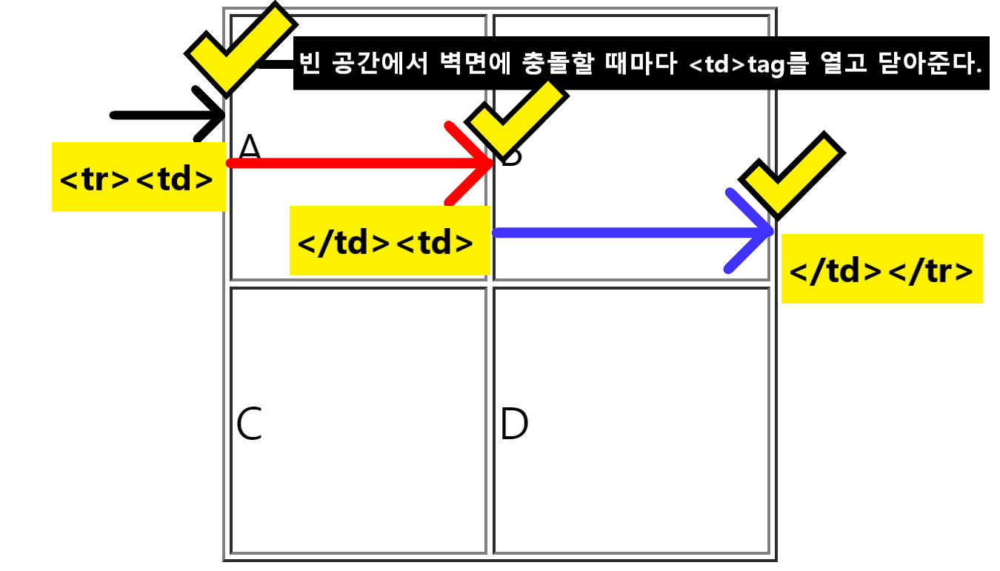
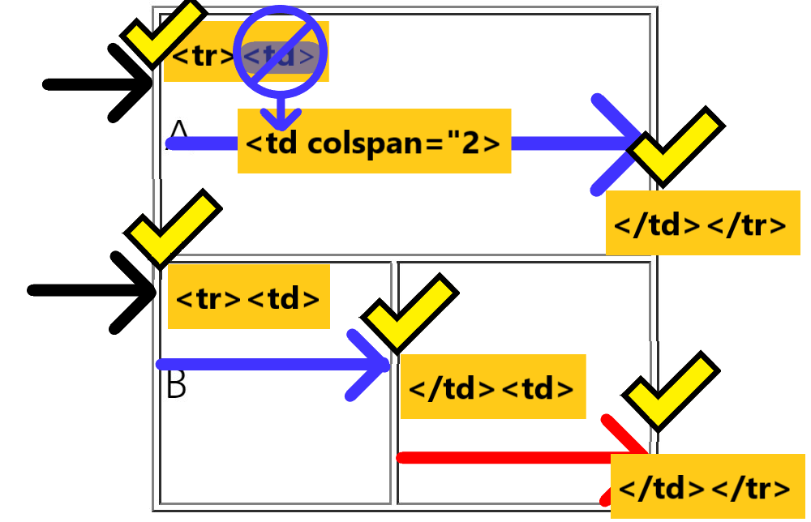
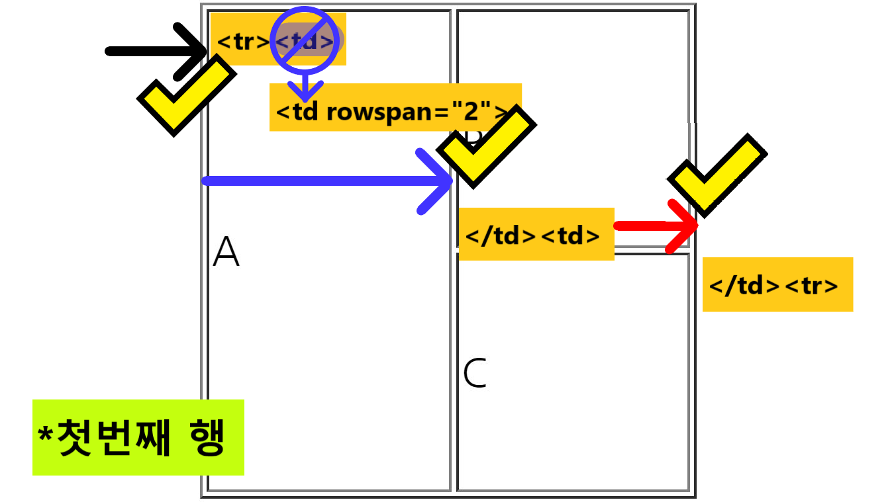
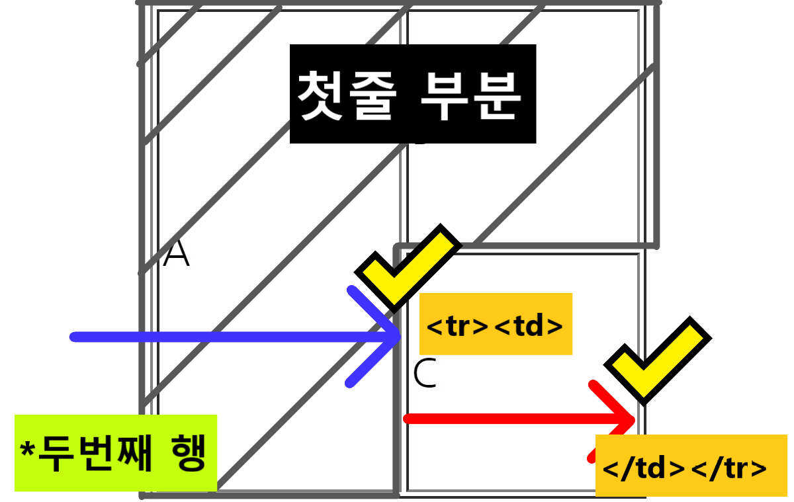

*표는 줄(행)-가로가 중요하다.
따라서, 빈 공간에서 시작하여 그리고 싶은 표의 벽면에 충돌할 때마다 <td> tag를 열고 닫아준다.
tag를 열고 닫아준다.">
<table border="1px" width="200px" height="200px"> → 표의 선은 1픽셀 굵기의 표는 가로 200픽셀, 세로 200픽셀로 지정할 것이다.
<tr><td>A</td><td>B</td></tr> → □□
<tr><td>C</td><td>D</td></tr> → □□
</table> → 표를 여기서 닫아줄 것이다.
tag를 열고 닫아준다.">
열병합은 <td>tag 안에 colspan 속성을 사용한다. colspan 속성은 columns(기둥)+span(다리건물 따위의 기둥과 기둥 사이)를 뜻한다. colspan="2" 에 들어가는 숫자는 2열을 병합했다는 병합했다는 의미다. 열병합한 칸 숫자가 와야하며, 절대 픽셀을 의미하는 것이 아니다.
<table border="1px" width="200px" height="200px"> → 표의 선은 1픽셀 굵기의 표는 가로 200픽셀, 세로 200픽셀로 지정할 것이다.
<tr><td colspan="2">A</td></tr> → 이 행은 2개의 열을 병합할 것이다. □
<tr><td>C</td><td>D</td></tr> → □□
</table>
tag를 열고 닫아준다.">
행병합은 <td>tag 안에 rowspan속성을 사용한다.rowspan 속성은 row(사람, 사물들이 옆으로 늘어서 있는 열)+span(다리건물 따위의 기둥과 기둥 사이)를 뜻한다. rowspan="2" 에 들어가는 숫자는 2행을 병합했다는 병합했다는 의미다. 행병합한 칸 숫자가 와야하며, 절대 픽셀을 의미하는 것이 아니다.
* 행병합의 경우, 첫줄만 잘 보고 작성하면 꼬이지 않는다. 첫줄을 기준으로 하고 표를 작성한다.
<table border="1px" width="200px" height="200px"> → 표의 선은 1픽셀 굵기의 표는 가로 200픽셀, 세로 200픽셀로 지정할 것이다.
<tr><td rowspan="2">A</td><td>B</td></tr>
<tr><td>C</td></tr> → □
</table>
tag를 열고 닫아준다.">
tag를 열고 닫아준다.">